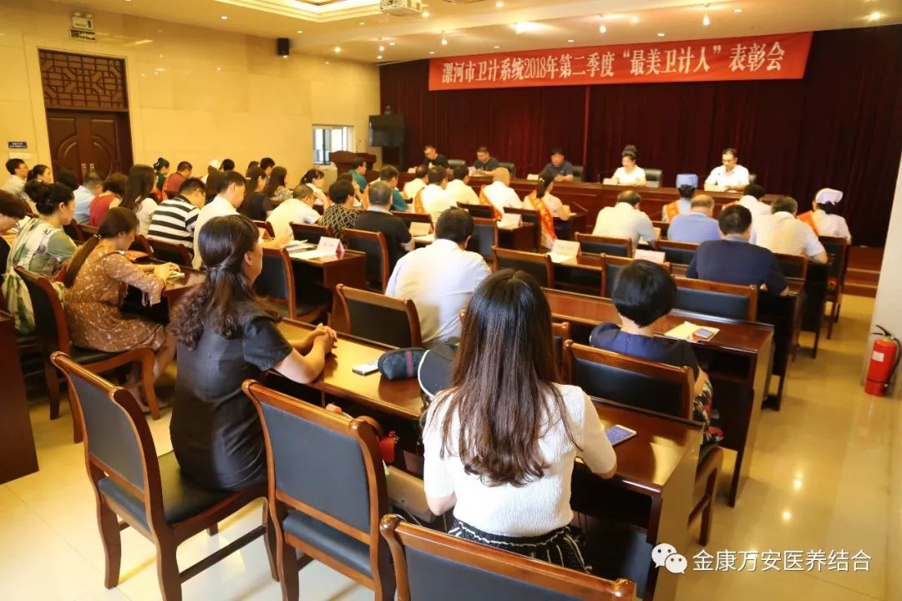
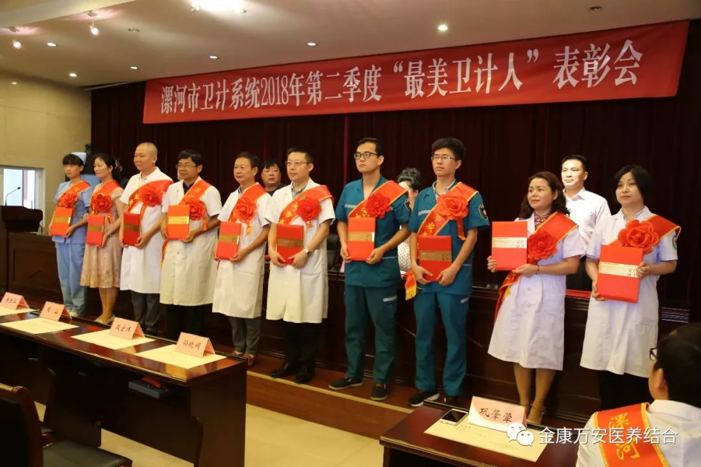
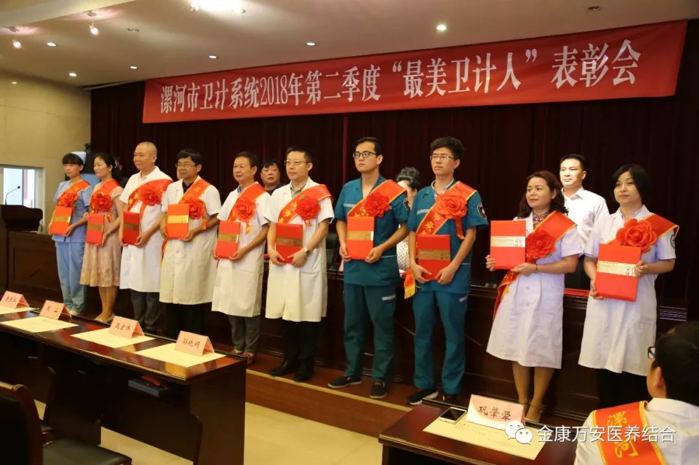

【先进人物】漯河市卫计委2018年第二季度评“最美卫计人”之漯河万安医院副院长万素华
为鼓励先进，弘扬正能量，促进全市卫计系统干部职工更加努力工作，漯河市卫计委于7月30日上午，在漯河市卫计委六楼会议室召开了漯河市2018年第二季度“最美卫计人”表彰大会。经过层层选拔，漯河万安医院副院长万素华获得 漯河市2018年第二季度“最美卫计人”的荣誉称号！


 


漯河市卫计委党组成员、吴朝文副主任在总结中说到，希望受表彰的同志发扬成绩，再接再厉，力争取得更大的成绩。全市各级卫生计生单位和个人要学习先进，奋发有为，开拓进取，积极投身全国文明城市的争创活动中建功立业，推动全系统精神文明建设再上新台阶。
事迹说明：情牵医患 心系老人
2018年5月9日，科内收治了一位急性心肌炎病人，该病人还患有眼疾，视物不清，行动不便，其家人为他办好入院手续后，因有很重要的事离开医院，病人心情十分低落。万素华得知情况后，告诉病人家人尽管放心，一定会把病人照顾好。随后，万素华引导他熟悉病房设施情况，认真细致的为病人检查、治疗，像自家女儿一样和患者拉家常，增强病人治疗疾病的信心。在该患者住院的日子里，万素华每天上班第一件事就是先到病房看望他，并将一日三餐为患者端到床旁……经过治疗，患者病情逐渐好转，出院时拉着万主任的手久久不肯松开，连说如果没有万主任的精心治疗他不可能这么快出院，家属也是感谢声不断，说真没想到他不在医院陪护，却还把自己的父亲照顾的如此好。

2018年6月3日上午，向往常一样，万素华每天都会对入住的老人进行查房，当来到503房间给李奶奶听诊的时候，李奶奶突然之间闹情绪，冷不防地一巴掌过来，然后是连打带抓，把万素华的头发揪下来一撮，但是万素华没有顾得上疼痛，连忙安抚平顺李奶奶暴躁的情绪。经过十来分钟的安抚，李奶奶逐渐恢复了平静。虽然经过检查没有什么大问题，但着实让万素华头疼了好几天。家属来了一个劲的向万素华道歉，但万素华却说；“没事，这是她有病了，并且年龄也大了，要是没病她不会这样，您们放心吧！我还是会像以前一样照顾她的。